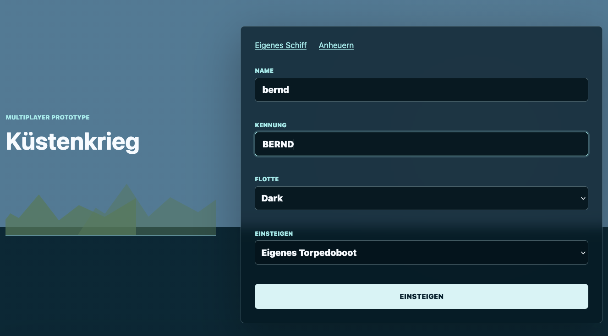
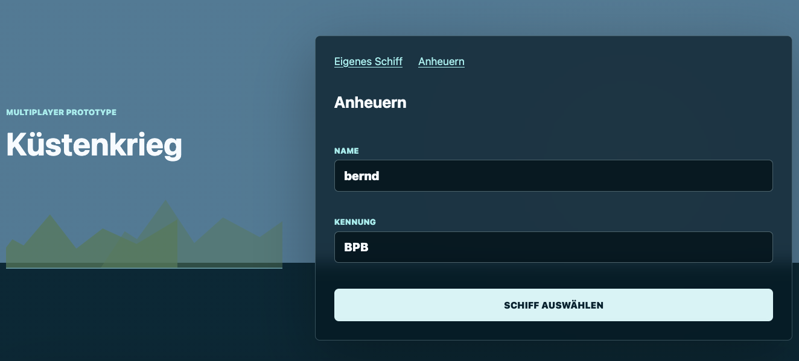
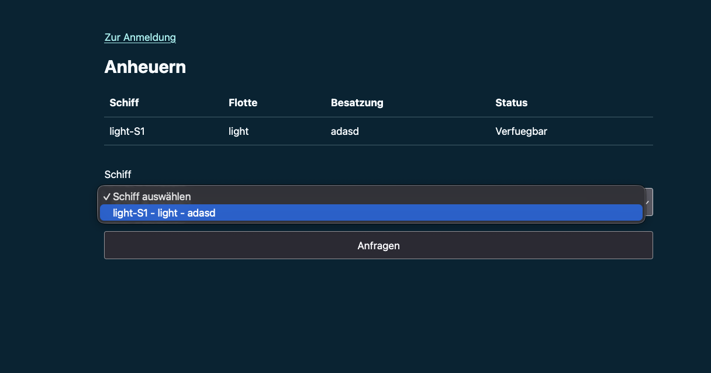
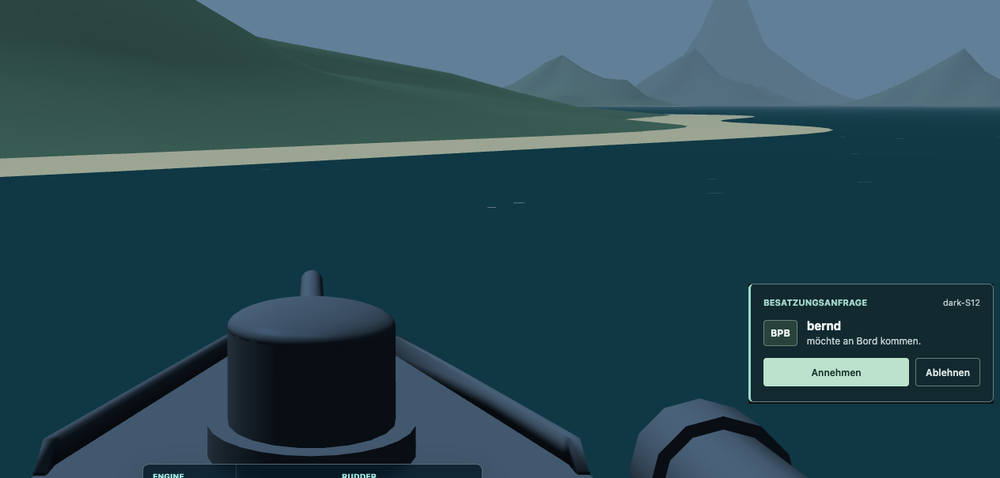
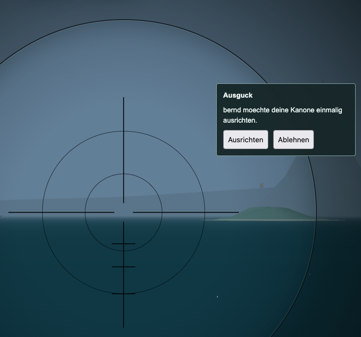

So heuerst du an
- Wähle beim Einstieg Anheuern und gib Namen sowie Kennung an.
- Wähle ein verfügbares, menschlich besetztes Torpedoboot aus der Liste. Dort siehst du Flotte, Besatzung und Status.
- Sende deine Anfrage. Warte auf die Entscheidung der Besatzung beziehungsweise Schiffsführung; eine Anfrage ist noch keine Aufnahme. Wird das angefragte Schiff versenkt, bleibt die offene Anfrage an dieselbe Besatzung bestehen und folgt ihr zum neuen Schiff. Die Besatzung hat zwei Minuten Zeit zu antworten. Kommt keine Antwort, kannst du nach einer weiteren Minute erneut bei ihr anfragen. Nach ausdrücklicher Ablehnung beträgt die Wartezeit fünf Minuten. Bei einer anderen Besatzung kannst du nach Abschluss der offenen Anfrage sofort anfragen. Die Antwortfrist läuft auch während des Wiedereinstiegs weiter.
- Wird sie angenommen, gelangst du über An Bord auf das gemeinsame Schiff. Wähle eine freie Position.
Anheuern gibt es nur auf Torpedobooten. Ist kein geeignetes Boot verfügbar, kann gerade keines bemannt oder aufnahmebereit sein. Du kannst stattdessen ein eigenes Torpedoboot wählen und andere später zu dir kommen lassen.
1 · Beim Einstieg „Anheuern“ öffnen


2 · Namen und Kennung eingeben


3 · Schiff auswählen und anfragen


4 · An Bord: Anfrage annehmen oder ablehnen


Diese Meldung erscheint bei der Schiffsführung. Sie zeigt, wer an Bord kommen möchte. Mit Annehmen wird die Anfrage bestätigt; Ablehnen weist sie zurück.
Ihr teilt ein Schiff, nicht dieselbe Aufgabe
Wer auf der Brücke sitzt, bestimmt Fahrt und Ruder. Die Person an der Flak richtet die Flak aus und schießt, die Person an der Kanone ihre Kanone. Der Ausguck kann unabhängig nach Zielen suchen. Das Schiff fährt währenddessen weiter: Ein Wechsel zum Geschütz hält es nicht an.
Du bist nicht für die ganze Runde an einen Platz gebunden. Wechsle mit B, O, F, C oder per Klick links auf eine freie Position. Ist ein Platz besetzt, suche eine andere Aufgabe. So kann der Ausguck eine freie Kanone übernehmen, während die Brücke weiter ausweicht.
Ziele finden und gemeinsam bekämpfen
Die automatischen Warnungen vor feindlichen Sehrohren und Flugzeugangriffen sehen alle an Bord. Der Ausguck muss sie nicht auslösen: Er kann sich auf die Zielsuche konzentrieren und nach einem Hinweis die gemeldete Richtung absuchen.
Vom Ausguck aus kannst du mit C oder F eine Zielrichtung empfehlen. Ein besetztes Geschütz wird nicht ungefragt weggerissen: Die bedienende Person bekommt eine Zustimmungsanfrage. Ist es frei, wechselst du selbst an das ausgerichtete Geschütz.


Die Anfrage im Detail
Nach dem Wechsel oder dem Sinken
Schau nach jedem Positionswechsel kurz auf die linke Übersicht: Wer steuert, welches Geschütz ist frei? Nach einer Versenkung und beim Wiedereinstieg prüfst du diese Aufteilung erneut. Möchtest du die Mannschaft verlassen, verwende die entsprechende Schaltfläche im Spiel.